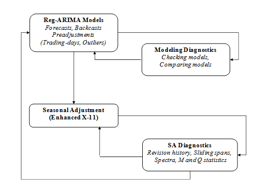

X-11 decomposition
In this chapter
context
moving averages
algorithm steps
high frequency data (extended features)
X-11 in seasonal adjustment
The X-11 program is the result of a long tradition of non-parametric smoothing based on moving averages which have two important drawbacks:
They are not resistant and might be deeply impacted by outliers;
The smoothing of the ends of the series cannot be done except with asymmetric moving averages which introduce phase-shifts and delays in the detection of turning points.
To overcome these flaws first the series are modelled with a RegARIMA model that removes deterministic effects (calendar, outliers) and computes forecasts.

Moving averages
To understand the decomposition process, some concepts on moving averages (MA) are necessary
A moving average of order \(p+f+1\) and coefficients \((\theta_i)\) is the operator \(M\) defined as: \[ MX_t = \sum_{i=-p}^{f}\theta_i X_{t+i} \]
The series value in \(t\) is replaced by a weighted average of \(p\) past values, the current value and the \(f\) future values. If \(p=f\), the moving average is centered and if \(\theta_{-i} = \theta_i\), it is symmetrical.
Example of simple moving average of order 3:
\[ MX_t = \frac{1}{3}(X_{t-1}+X_{t}+ X_{t+1}) \]
A moving average is a linear operator, \(M(X_t+Y_t) = M(X_t)+M(Y_t)\).
Combined moving averages
Centered and symmetrical moving averages preserve linear trends, which is a desirable propriety. They cannot have an even order, thus for even orders they are obtained by combining simple MAs as arithmetic means of p moving averages of same order (ie. length): \(M_{p\times order}\)
Combination example for order 12:
There a are two intuitive ways to create a MA of order 12:
\[ M1X_t = \frac{1}{12}(X_{t-6}+X_{t-5}+ X_{t-4}+ X_{t-3}+ X_{t-2}+ X_{t-1} \] \[ + X_{t}+ X_{t+1}+ X_{t+2}+ X_{t+3}+ X_{t+4}+X_{t+5}) \] The other being: \[ M2X_t = \frac{1}{12}(X_{t-5}+ X_{t-4}+ X_{t-3}+ X_{t-2}+ X_{t-1}+ X_{t} \] \[ + X_{t+1}+ X_{t+2}+ X_{t+3}+ X_{t+4}+X_{t+5}+X_{t+6}) \]
Combining MAs enables us to create a centered and symmetrical MA with an even order:
\[ M_{2\times 12}= \frac{1}{2}(M1X_t+M2X_t) \] which is:
\[ M_{2\times 12} =\frac{1}{24}(X_{t-6}) +\frac{1}{12}(X_{t-5}+ X_{t-4} \] \[ +X_{t-3}+ X_{t-2}+ X_{t-1}+ X_{t}+X_{t+1}+ X_{t+2} \] \[ + X_{t+3}+ X_{t+4}+X_{t+5})+\frac{1}{24}(X_{t+6}) \]
Supressing locally constant seasonality
Applying a moving average of an order equal to the periodicity of the raw series removes a locally stable seasonality (\(\sum_{i=1}^{12}S_{t+i} = 0\))
A moving average of order, 12 will remove a locally stable monthly seasonality: \(M_{1\times 12}(S)=0\) and also \(M_{2\times 12}(S)=0\) with linear trend preservation.
X-11 algorithm basic steps
The seasonal adjustment algorithm can has eight steps. They are outlined below for a monthly time series. (For a quarterly time series a \(2\times 4\) moving average would be used, instead of \(2\times 12\))
Step 1: Estimation of the trend-cycle with a \(2\times 12\) MA: \[ TC_t^{(1)}=M_{2\times 12}(X_t) \]
Step 2: Estimation of the seasonal+irregular component: \[ (S_t+I_t)^{(1)}= X_t - TC_t^{(1)} \]
Step 3: Estimation of the seasonal component by applying a \(3\times 3\) MA to each month: \[ S_t^{(1)}= M_{3\times 3}\left[(S_t+I_t)^{(1)}\right] \text{ and normalisation } Snorm_t^{(1)}=S_t^{(1)} - M_{2\times 12}\left(S_t^{(1)}\right) \]
Step 4 :First estimation of the seasonally adjusted series: \[ Xsa_t^{(1)}= (TC_t+I_t)^{(1)} = X_t - Snorm_t^{(1)} \]
Step 5: Refined estimation of the trend-cycle with a Henderson filter, which yields a better approximation fo trends than \(2\times 12\) MA, but cannot be applied on seasonal series: \[ TC_t^{(2)}=H_{13}(Xsa_t^{(1)}) \] Step 6: Refined estimation of the seasonal+irregular part: \[ (S_t+I_t)^{(2)}= X_t - TC_t^{(2)} \]
Step 7: Refined estimation of the seasonal component by applying a \(3\times 5\) MA (generally) to each month/quarter: \[ S_t^{(2)}= M_{3\times 5}\left[(S_t+I_t)^{(2)}\right] \text{ and normalisation } Snorm_t^{(2)}=S_t^{(2)} - M_{2\times 12}\left(S_t^{(2)}\right) \]
Step 8: Final estimation of the seasonally adjusted series: \[ Xsa_t^{(2)}= X_t - Snorm_t^{(2)} \]
Iterative principle of X-11
To evaluate the different components of a series, while taking into account the possible presence of extreme observations, X-11 will proceed iteratively: estimation of components, search for disruptive effects in the irregular component, estimation of components over a corrected series, search for disruptive effects in the irregular component, and so on.
The Census X-11 program presents four processing stages (A, B, C, and D), plus 3 stages, E, F, and G, that propose statistics and charts and are not part of the decomposition per se. In stages B, C and D the basic algorithm is used as is indicated in the figure below.
A workflow diagram for the X-11 algorithm implemented in JDemetra+. Source: Based upon training material from the Deutsche Bundesbank
- Part A: Pre-adjustments
This part, which is not obligatory, corresponds in X-13ARIMA-SEATS to the first cleaning of the series done using the RegARIMA facilities: detection and estimation of outliers and calendar effects (trading day and Easter), forecasts and backcasts[^61] of the series. Based on these results, the program calculates prior adjustment factors that are applied to the raw series. The series thus corrected, Table B1 of the printouts, then proceeds to part B.
- Part B: First automatic correction of the series
This stage consists of a first estimation and down-weighting of the extreme observations and, if requested, a first estimation of the calendar effects. This stage is performed by applying the basic algorithm detailed earlier. These operations lead to Table B20, adjustment values for extreme observations, used to correct the unadjusted series and result in the series from Table C1.
- Part C: Second automatic correction of the series
Applying the basic algorithm once again, this part leads to a more precise estimation of replacement values of the extreme observations (Table C20). The series, finally “cleaned up”, is shown in Table D1 of the printouts.
- Part D: Seasonal adjustment
This part, at which our basic algorithm is applied for the last time, is that of the seasonal adjustment, as it leads to final estimates:
of the seasonal component (Table D10);
of the seasonally adjusted series (Table D11);
of the trend component (Table D12);
of the irregular component (Table D13).
Part E: Components modified for large extreme values
Parts E includes:
Components modified for large extreme values;
Comparison the annual totals of the raw time series and seasonally adjusted time series;
Changes in the final seasonally adjusted series;
Changes in the final trend;
Robust estimation of the final seasonally adjusted series.
The results from part E are used in part F to calculate the quality measures.
- Part F: Seasonal adjustment quality measures
Part F contains statistics for judging the quality of the seasonal adjustment. JDemetra+ presents selected output for part F, i.e.:
M and Q statistics;
Tables.
The Henderson moving average and the trend estimation
In iteration B (Table B7), iteration C (Table C7) and iteration D (Table D7 and Table D12) the trend component is extracted from an estimate of the seasonally adjusted series using Henderson moving averages. The length of the Henderson filter is chosen automatically by X-13ARIMA-SEATS in a two-step procedure.
It is possible to specify the length of the Henderson moving average to be used. X-13ARIMA-SEATS provides an automatic choice between a 9-term, a 13-term or a 23-term moving average. The automatic choice of the order of the moving average is based on the value of an indicator called \(\frac{\overline{I}}{\overline{C}}\) ratio which compares the magnitude of period-on-period movements in the irregular component with those in the trend. The larger the ratio, the higher the order of the moving average selected. Moreover, X-13ARIMA-SEATS allows the user to choose manually any odd‑numbered Henderson moving average. The procedure used in each part is very similar; the only differences are the number of options available and the treatment of the observations in the both ends of the series. The procedure below is applied for a monthly time series.
In order to calculate \(\frac{\overline{I}}{\overline{C}}\) ratio a first decomposition of the SA series (seasonally adjusted) is computed using a 13-term Henderson moving average.
For both the trend (\(C\)) and irregular (\(I\)) components, the average of the absolute values for monthly growth rates (multiplicative model) or for monthly growth (additive model) are computed. They are denoted as \(\overline{C}\) and \(\overline{I}\), receptively, where:
\(\overline{C} = \frac{1}{n - 1}\sum_{t = 2}^{n}\left| C_{t} - C_{t - 1} \right|\) ;
\(\overline{I} = \frac{1}{n - 1}\sum_{t = 2}^{n}\left| I_{t} - I_{t - 1} \right|\).
Then the value of \(\frac{\overline{I}}{\overline{C}}\) ratio is checked and in iteration B:
If the ratio is smaller than 1, a 9-term Henderson moving average is selected;
Otherwise, a 13-term Henderson moving average is selected.
Then the trend is computed by applying the selected Henderson filter to the seasonally adjusted series from Table B6. The observations at the beginning and at the end of the time series that cannot be computed by means of symmetric Henderson filters are estimated by ad hoc asymmetric moving averages.
In iterations C and D:
If the ratio is smaller than 1, a 9-term Henderson moving average is selected;
If the ratio is greater than 3.5, a 23-term Henderson moving average is selected.
Otherwise, a 13-term Henderson moving average is selected.
The trend is computed by applying selected Henderson filter to the seasonally adjusted series from Table C6, Table D7 or Table D12, accordingly. At the both ends of the series, where a central Henderson filter cannot be applied, the asymmetric ends weights for the 7 term Henderson filter are used.
Choosing the composite moving averages when estimating the seasonal component
In iteration D, Table D10 shows an estimate of the seasonal factors implemented on the basis of the modified SI (Seasonal – Irregular) factors estimated in Tables D4 and D9bis. This component will have to be smoothed to estimate the seasonal component; depending on the importance of the irregular in the SI component, we will have to use moving averages of varying length as in the estimate of the Trend/Cycle where the \(\frac{\overline{I}}{\overline{C}}\) ratio was used to select the length of the Henderson moving average. The estimation includes several steps.
Step 1: Estimating the irregular and seasonal components
An estimate of the seasonal component is obtained by smoothing, month by month and therefore column by column, Table D9bis using a simple 7-term moving average, i.e. of coefficients \(\frac{1}{7} \left\{1,\ 1,\ 1,\ 1,\ 1,\ 1,\ 1\right\}\). In order not to lose three points at the beginning and end of each column, all columns are completed as follows. Let us assume that the column that corresponds to the month is composed of \(N\) values \(\left\{ x_{1},\ x_{2},\ x_{3},\ \ldots x_{N - 1},\ x_{N} \right\}\). It will be transformed into a series \(\left\{ {x_{- 2},x_{- 1}{,x}_{0},x}_{1},\ x_{2},\ x_{3},\ \ldots x_{N - 1},\ x_{N},x_{N + 1},\ x_{N + 1},\ x_{N + 2},\ x_{N + 3} \right\}\) with \(x_{- 2} = x_{- 1} = x_{0} = \frac{x_{1} + x_{2} + x_{3}}{3}\) and \(x_{N + 1} = x_{N + 2} = x_{N + 3} = \frac{x_{N} + x_{N - 1} + x_{N - 2}}{3}\). We then have the required estimates: \(S = M_{7}(D9bis)\) and \(I = D9bis - S\).
Step 2: Calculating the Moving Seasonality Ratios
For each \(i^{\text{th}}\) month the mean annual changes for each component is obtained by calculating \[ {\overline{S}}_{i} = \frac{1}{N_{i} - 1}\sum_{t = 2}^{N_{i}}\left| S_{i,t} - S_{i,t - 1} \right| \]
and
\[ {\overline{I}}_{i} = \frac{1}{N_{i} - 1}\sum_{t = 2}^{N_{i}}\left| I_{i,t} - I_{i,t - 1} \right| \]
where \(N_{i}\) refers to the number of months \(\text{i}\)in the data, and the moving seasonality ratio of month \(i\):
\[ MSR_{i} = \frac{\ {\overline{I}}_{i}}{ {\overline{S}}_{i}} \]
These ratios are presented in Details of the Quality Measures node under the Decomposition (X11) section. These ratios are used to compare the year-on-year changes in the irregular component with those in the seasonal component. The idea is to obtain, for each month, an indicator capable of selecting the appropriate moving average for the removal of any noise and providing a good estimate of the seasonal factor. The higher the ratio, the more erratic the series, and the greater the order of the moving average should be used. As for the rest, by default the program selects the same moving average for each month, but the user can select different moving averages for each month.
Step 3: Calculating the overall Moving Seasonality Ratio
The overall Moving Seasonality Ratio is calculated as follows:
\[ \text{MSR}_{i} = \frac{\sum_{i}^{}{N_{i}\ }\ {\overline{I}}_{i}}{\sum_{i}^{}N_{i}{\overline{S}}_{i}} \] Step 4: Selecting a moving average and estimating the seasonal component
Depending on the value of the ratio, the program automatically selects a moving average that is applied, column by column (i.e. month by month) to the Seasonal/Irregular component in Table D8 modified, for extreme values, using values in Table D9.
The default selection procedure of a moving average is based on the Moving Seasonality Ratio in the following way:
If this ratio occurs within zone A (MSR < 2.5), a \(3 \times 3\) moving average is used; if it occurs within zone C (3.5 < MSR < 5.5), a \(3 \times 5\) moving average is selected; if it occurs within zone E (MSR 6.5), a \(3 \times 9\) moving average is used;
If the MSR occurs within zone B or D, one year of observations is removed from the end of the series, and the MSR is recalculated. If the ratio again occurs within zones B or D, we start over again, removing a maximum of five years of observations. If this does not work, i.e. if we are again within zones B or D, a \(3 \times 5\) moving average is selected.
The chosen symmetric moving average corresponds, as the case may be 5 (\(3 \times 3\)), 7 (\(3 \times 5\)) or 11 (\(3 \times 9\) \(3 \times 9\)) terms, and therefore does not provide an estimate for the values of seasonal factors in the first 2 (or 3 or 5) and the last 2 (or 3 or 5) years. These are then calculated using associated asymmetric moving averages.
Moving average selection procedure, source: DAGUM, E. B.(1999)
Extreme values: identification and replacement
X-13ARIMA-SEATS detects and removes outliers in the RegARIMA part. However, if there is a seasonal heteroscedasticity in a time series i.e. the variance of the irregular component is different in different calendar months. Examples for this effect could be the weather and snow-dependent output of the construction sector in Germany during winter, or changes in Christmas allowances in Germany and resulting from this a transformation in retail trade turnover before Christmas. The ARIMA model is not on its own able to cope with this characteristic. The practical consequence is given by the detection of additional extreme values by X-11. This may not be appropriate if the seasonal heteroscedasticity is produced by political interventions or other influences. The ARIMA models assume a constant variance and are therefore not by themselves able to cope with this problem. Choosing longer (in the case of diverging weather conditions in the winter time for the construction sector) or shorter filters (in the case of a changing pattern of retail trade turnover in the Christmas time) may be reasonable in such cases. It may even be sensible to take into account the possibility of period-specific (e.g. month-specific) standard deviations, which can be done by changing the default settings of the calendarsigma parameter (see Specifications-X13 section). The value of the calendarsigma parameter will have an impact on the method of calculation of the moving standard deviation in the procedure for extreme values detection presented below.
Though we (should) rely on the pre-adjustment stage to correct for extreme values (transparent method with explicit modelling), X11 has its own (historical) module for identification and treatment of extreme values based on a comparison between the actual and the theoretical value of \(I\).
Stages B and C aim only at correcting for extreme values:
Step 1: \(I\) is estimated once \(S\) has been extracted from \(S+I\)
for each year the standard deviation \(\sigma\) is computed on the 5 neighbouring years
\(I\) has a theoretical value \(m\), for multiplicative model \(m=1\), \(m=0\) for an additive model
for a given year \(y\): any point such as \(\lvert I_t - m\rvert >2,5 \sigma_y\) is considered as an extreme value and suppressed….
…all the yearly sigmas (\(\sigma_y\)) are computed without those points (more robust sigmas )
Step 2: The distance \(\lvert I_t - m\rvert\) is computed for each point and evaluated with \(\sigma_{y}\) as a benchmark, a weight \(w_t\) is then assigned to each point, 3 cases:
- value unchanged \[\lvert I_t - m\rvert <1.5 \sigma_y \Rightarrow w_t=1\]
- value downsized \[1,5 \sigma_y<\lvert I_t - m\rvert <2,5 \sigma_y \Rightarrow w_t=\frac{2.5 \sigma_y -\lvert I_t - m\rvert}{2.5 \sigma_y-1.5 \sigma_y}\]
- value removed and replaced \[\lvert I_t - m\rvert >2,5 \sigma_y \Rightarrow w_t=0\]
Step3: Thanks to this weights, a new value of \(S+I\) will be computed:
if \(w_{t}=1\), \(S+I\) remains unchanged for point {t}
if \(w_{t}<1\) then the new value of \(S+I\) will be an average of \(w_{t}*(S+I)_{t}\) and the values of \((S+I)\) of the two closest neighbors in the future and in the past with \(w=1\)
X-11 output tables
The list of tables produced by JDemetra+ is presented below. It is not identical to the output produced by the original X-11 program.
Part A – Preliminary Estimation of Outliers and Calendar Effects.
This part includes prior modifications to the original data made in the RegARIMA part:
Table A1 – Original series;
Table A1a – Forecast of Original Series;
Table A2 – Leap year effect;
Table A6 – Trading Day effect (1 or 6 variables);
Table A7 – The Easter effect;
Table A8 – Total Outlier Effect;
Table A8i – Additive outlier effect;
Table A8t – Level shift effect;
Table A8s – Transitory effect;
Table A9 – Effect of user-defined regression variables assigned to the seasonally adjusted series or for which the component has not been defined;
Table 9sa – Effect of user-defined regression variables assigned to the seasonally adjusted series;
Table9u – Effect of user-defined regression variables for which the component has not been defined.
Part B – Preliminary Estimation of the Time Series Components:
Table B1 – Original series after adjustment by the RegARIMA model;
Table B2 – Unmodified Trend (preliminary estimation using composite moving average);
Table B3 – Unmodified Seasonal – Irregular Component (preliminary estimation);
Table B4 – Replacement Values for Extreme SI Values;
Table B5 – Seasonal Component;
Table B6 – Seasonally Adjusted Series;
Table B7 – Trend (estimation using Henderson moving average);
Table B8 – Unmodified Seasonal – Irregular Component;
Table B9 – Replacement Values for Extreme SI Values;
Table B10 – Seasonal Component;
Table B11 – Seasonally Adjusted Series;
Table B13 – Irregular Component;
Table B17 – Preliminary Weights for the Irregular;
Table B20 – Adjustment Values for Extreme Irregulars.
Part C – Final Estimation of Extreme Values and Calendar Effects:
Table C1 – Modified Raw Series;
Table C2 – Trend (preliminary estimation using composite moving average);
Table C4 – Modified Seasonal – Irregular Component;
Table C5 – Seasonal Component;
Table C6 – Seasonally Adjusted Series;
Table C7 – Trend (estimation using Henderson moving average);
Table C9 – Seasonal – Irregular Component;
Table C10 – Seasonal Component;
Table C11 – Seasonally Adjusted Series;
Table C13 – Irregular Component;
Table C20 – Adjustment Values for Extreme Irregulars.
Part D – Final Estimation of the Different Components:
Table D1 – Modified Raw Series;
Table D2 – Trend (preliminary estimation using composite moving average);
Table D4 – Modified Seasonal – Irregular Component;
Table D5 – Seasonal Component;
Table D6 – Seasonally Adjusted Series;
Table D7 – Trend (estimation using Henderson moving average);
Table D8 – Unmodified Seasonal – Irregular Component;
Table D9 – Replacement Values for Extreme SI Values;
Table D10 – Final Seasonal Factors;
Table D10A – Forecast of Final Seasonal Factors;
Table D11 – Final Seasonally Adjusted Series;
Table D11A – Forecast of Final Seasonally Adjusted Series;
Table D12 – Final Trend (estimation using Henderson moving average);
Table D12A – Forecast of Final Trend Component;
Table D13 – Final Irregular Component;
Table D16 – Seasonal and Calendar Effects;
Table D16A – Forecast of Seasonal and Calendar Component;
Table D18 – Combined Calendar Effects Factors.
Part E – Components Modified for Large Extreme Values:
Table E1 – Raw Series Modified for Large Extreme Values;
Table E2 – SA Series Modified for Large Extreme Values;
Table E3 – Final Irregular Component Adjusted for Large Extreme Values;
Table E11 – Robust Estimation of the Final SA Series.
Part F – Quality indicators:
Table F2A – Changes, in the absolute values, of the principal components;
Table F2B – Relative contribution of components to changes in the raw series;
Table F2C – Averages and standard deviations of changes as a function of the time lag;
Table F2D – Average duration of run;
Table F2E – I/C ratio for periods span;
Table F2F – Relative contribution of components to the variance of the stationary part of the original series;
Table F2G – Autocorrelogram of the irregular component.
Filter length choice
A seasonal filter is a weighted average of a moving span of fixed length within a time series that can be used to remove a fixed seasonal pattern. X-13ARIMA-SEATS uses several of these filters, according to the needs of the different stages of the program. As only X-13ARIMA-SEATS allows the user to manually select seasonal filters, this case study can be applied only to the X-13ARIMA-SEATS specifications.
The automatic seasonal adjustment procedure uses the default options to select the most appropriate moving average. However there are occasions when the user will need to specify a different seasonal moving
average to that identified by the program. For example, if the SI values do not closely follow the seasonal component, it may be appropriate to use a shorter moving average. Also the presence of sudden breaks in the seasonal pattern – e.g. due to changes in the methodology – can negatively impact on the automatic selection of the most appropriate seasonal filter. In such cases the usage of short seasonal filters in the selected months or quarters can be considered. Usually, a shorter seasonal filter \((3 \times 1)\) allows seasonality to change very rapidly over time. However, a very short seasonal filter should not normally be used, as it might often lead to large revisions as new data becomes available. If a short filter is to be used it will usually be limited to one month/quarter with a known reason for wanting to capture a rapidly changing seasonality.
In the standard situation one seasonal filter is applied to all individual months/quarters. The estimation of seasonal movements is therefore based on the sample windows of equal lengths for each individual month/quarter (i.e. for each month/quarter the seasonal filter length or the number of years representing the major part of the seasonal filter weights is identical). This approach relies on the assumption that the number of past periods in which the conditions causing seasonal behaviour are sufficiently homogenous is the same in all months/quarters. However, this assumption does not always hold. Seasonal causes may change in one month, while staying the same in others1. For instance, seasonal heteroskedasticity might require different filter lengths in different months or quarters.
Another interesting example is industrial production in Germany. It can be influenced by school holidays, since many employees have school-age children, which interrupt their working pattern during these school holidays. Consequently, businesses may temporarily suspend or lower production during these periods. Since school holidays do not occur at the same time throughout Germany and their timing varies from year to year in the individual federal states, the effect is not completely captured by seasonal adjustment. And since school holidays are treated as usual working days, these effects are not captured by calendar adjustment either. The majority of school holidays in Germany can take place either in July or in August. This yields higher variances in the irregular component for these months compared to the rest of the year. Therefore, in this case a longer seasonal filter is used for these months to account for this.
Another example might be given by German retail trade. Due to changes in the consumers’ behaviour around Christmas – possibly more gifts of money – the seasonal peak in December has become steadily less pronounced. To account for this moving seasonality, shorter seasonal filters in December than during the rest of the year need to be applied.
JDemetra+ offers the options to assign a different seasonal filter length to each period (month or quarter). The program offers these options in the single spec mode as well as in the multispec mode, albeit they are available only in the Specifications window, after a document is created.
M-stats
The details about the measures are given below.
\(M1\) measures the contribution of the irregular component to the total variance. When it is above 1 some changes in outlier correction should be considered.
\(M2\), which is a very similar to \(M1\), is calculated on the basis of the contribution of the irregular component to the stationary portion of the variance. When it is above 1, some changes in an outlier correction should be considered.
\(M3\) compares the irregular to the trend taken from a preliminary estimate of the seasonally adjusted series. If this ratio is too large, it is difficult to separate the two components from each other. When it is above 1 some changes in outlier correction should be considered.
\(M4\) tests the randomness of the irregular component. A value above 1 denotes a correlation in the irregular component. In such case a shorter seasonal moving average filter should be considered.
\(M5\) is used to compare the significance of changes in the trend with that in the irregular. When it is above 1 some changes in outlier correction should be considered.
\(M6\) checks the \(\text{SI}\) (seasonal – irregular components ratio). If annual changes in the irregular component are too small in relation to the annual changes in the seasonal component, the \(3 \times 5\) seasonal filter used for the estimation of the seasonal component is not flexible enough to follow the seasonal movement. In such case a longer seasonal moving average filter should be considered. It should be stressed that \(M6\) is calculated only if the \(3 \times 5\) filter has been applied in the model.
\(M7\) is the combined test for the presence of an identifiable seasonality. The test compares the relative contribution of stable and moving seasonality2.
\(M8\) to \(M11\) measure if the movements due to the short-term quasi-random variations and movements due to the long-term changes are not changing too much over the years. If the changes are too strong then the seasonal factors could be erroneous. In such case a correction for a seasonal break or the change of the seasonal filter should be considered.
The \(Q\) statistic is a composite indicator calculated from the \(M\) statistics.
Edit : problem with tables display
\[ \scriptsize Q = \frac{10M1 + 11M2 + 10M3 + 8M4 + 11M5 + 10M6 + 18M7 + 7M8 + 7M9 + 4M10 + 4M11}{100} \tag{1}\]
\(Q = Q - M2\) (also called \(Q2\)) is the \(Q\) statistic for which the \(M2\) statistics was excluded from the formula, i.e.:
\[ \small Q - M2 = \frac{10M1 + 10M3 + 8M4 + 11M5 + 10M6 + 18M7 + 7M8 + 7M9 + 4M10 + 4M11}{89} \tag{2}\]
If a time series does not cover at least 6 years, the \(M8\), \(M9\), \(M10\) and \(M11\) statistics cannot be calculated. In this case the \(Q\) statistic is computed as:
\[ Q = \frac{14M1 + 15M2 + 10M3 + 8M4 + 11M5 + 10M6 + 32M7}{100} \]
The model has a satisfactory quality if the \(Q\) statistic is lower than 1.
The tables displayed in the Quality measures → Details node correspond to the F-set of tables produced by the original X-11 algorithm. To facilitate the analysis of the results, the numbers and the names of the tables are given under each table following the convention used in LADIRAY, D., and QUENNEVILLE, B. (1999).
Detailed Quality measures
In GUI all the diagnostics below can be displayed expanding the NODE
Decomposition(X-11) > Quality Measures > Details
They are detailed in the X-11 method chapter
In R (to be added)
Average percent change (or Average differences) without regard to sign over the indicated span
The first table presents the average percent change without regard to sign of the percent changes (multiplicative model) or average differences (additive model) over several periods (from 1 to 12 for a monthly series, from 1 to 4 for a quarterly series) for the following series:
\(O\) – Original series (Table A1);
\(\text{CI}\) – Final seasonally adjusted series (Table D11);
\(I\) – Final irregular component (Table D13);
\(C\) – Final trend (Table D12);
\(S\) – Final seasonal factors (Table D10);
\(P\) – Preliminary adjustment coefficients, i.e. regressors estimated by the Reg-Arima model (Table A2);
\(TD\& H\) – Final calendar component (Tables A6 and A7);
\(\text{Mod.O}\) – Original series adjusted for extreme values (Table E1);
\(\text{Mod.CI}\) – Final seasonally adjusted series corrected for extreme values (Table E2);
\(\text{Mod.I}\) – Final irregular component adjusted for extreme values (Table E3).
In the case of an additive decomposition, for each component the average absolute changes over several periods are calculated as:
\[\text{Component}_{d} = \frac{1}{n - d}\sum_{t = d + 1}^{n}|Table_{t} - Table_{t - d}|\]
where:
\(d\) – time lag in periods (from a monthly time series \(d\) varies from to 4 or from 1 to 12);
\(n\) – total number of observations per period;
\(\text{Component}\) – the name of the component;
\(\text{Table}\) – the name of the table that corresponds to the component.

For the multiplicative decomposition the following formula is used: \[\text{Component}_{d} = \frac{1}{n - d}\sum_{t = d+1}^{n}{|\frac{\text{Tabl}e_{t}}{\text{Table}_{t - d}} - 1|}\].
Relative contribution to the variance of the differences in the components of the original series
Next, Table F2B of relative contributions of the different components to the differences (additive model) or percent changes (multiplicative model) in the original series is displayed. They express the relative importance of the changes in each component. Assuming that the components are independent, the following relation is valid:
\[O_{d}^{2} \approx C_{d}^{2} + S_{d}^{2} + I_{d}^{2} + P_{d}^{2} + {TD\& H}_{d}^{2}\]
In order to simplify the analysis, the approximation can be replaced by the following equation:
\[O_{d}^{*2} = C_{d}^{2} + S_{d}^{2} + I_{d}^{2} + P_{d}^{2} + {TD\& H}_{d}^{2}\]
The notation is the same as for Table F2A. The column \(\text{Total}\) denotes total changes in the raw time series.
Data presented in Table F2B indicate the relative contribution of each component to the percent changes (differences) in the original series over each span, and are calculated as:
\(\frac{I_{d}^{2}}{O_{d}^{*2}}\), \(\frac{C_{d}^{2}}{O_{d}^{*2}}\), \(\frac{S_{d}^{2}}{O_{d}^{*2}}\), \(\frac{P_{d}^{2}}{O_{d}^{*2}}\) and \(\frac{TD\& H_{d}^{2}}{O_{d}^{*2}}\) where: \(O_{d}^{*2} = I_{d}^{2} + C_{d}^{2} + S_{d}^{2} + P_{d}^{2}{+ TD\& H}_{d}^{2}\).
The last column presents the Ratio calculated as: \(100 \times\frac{O_{d}^{*2}}{O_{d}^{2}}\), which is an indicator of how well the approximation \({(O_{d}^{*})}^{2} \approx O_{d}^{2}\) holds.

Average differences with regard to sign and standard deviation over indicated span
When an additive decomposition is used, Table F2C presents the average and standard deviation of changes calculated for each time lag \(d\), taking into consideration the sign of the changes of the raw series and its components. In case of a multiplicative decomposition the respective table shows the average percent differences and related standard deviations.

Average duration of run
Average duration of run is an average number of consecutive monthly (or quarterly) changes in the same direction (no change is counted as a change in the same direction as the preceding change). JDemetra+ displays this indicator for the seasonally adjusted series, for the trend and for the irregular component.

I/C ratio over indicated span and global
The \(\frac{I}{C}\) ratios for each value of time lag \(d\), presented in Table F2E, are computed on a basis of the data in Table F2A. Global IC is displayed below the table

Relative contribution to the stationary part of the variance in the original series
The relative contribution of components to the variance of the stationary part of the original series is calculated for the irregular component (\(I\)), trend made stationary (\(C\)), seasonal component (\(S\)) and calendar effects (TD&H).
The trend is made stationary by by extracting a linear trend from the trend component presented in Table D12.

Autocorrelations in the irregular
The last table shows the autocorrelogram of the irregular component from Table D13. In the case of multiplicative decomposition it is calculated for time lags between 1 and the number of periods per year +2 using the formula:
\[\text{Corr}_{k}I = \frac{\sum_{t = k + 1}^{N}{(I_{t} - 1)(I_{t - k} - 1)}}{\sum_{t = 1}^{N}{(I_{t} - 1)}^{2}}\] where \(N\) is number of observations in the time series and \(k\) the lag.
For the additive decomposition the formula is: \[Corr_{k}I_{t} = \frac{\sum_{t = k + 1}^{N}{(I_{t} \times I_{t - k})}}{\sum_{t = 1}^{N}{(I_{t})}^{2}}\]

Heteroskedasticity
Cochran test on equal variances within each period
The Cochran test is design to identify the heterogeneity of a series of variances. X-13-ARIMA-SEATS uses this test in the extreme value detection procedure to check if the irregular component is heteroskedastic. In this procedure the standard errors of the irregular component are used for an identification of extreme values. If the null hypothesis that for all the periods (months, quarters) the variances of the irregular component are identical is rejected, the standard errors will be computed separately for each period (in case the option Calendarsigma=signif has been selected).

Moving seasonality ratios (MSR)
For each \(i^{\text{th}}\) month we will be looking at the mean annual changes for each component by calculating:
\[{\overline{S}}_{i} = \frac{1}{N_{i} - 1}\sum_{t = 2}^{N_{i}}|S_{i,t} - S_{i,t - 1}|\]
and
\[{\overline{I}}_{i} = \frac{1}{N_{i} - 1}\sum_{t = 2}^{N_{i}}| I_{i,t} - I_{i,t - 1}|\],
where \(N_{i}\) refers to the number of months \(\text{i}\) in the data, and the moving seasonality ratio of month \(i\):
\[MSR_{i} = \frac{\overline{I}_{i}}{\overline{S}_{i}}\]
The Moving Seasonality Ratio (MSR) is used to measure the amount of noise in the Seasonal-Irregular component. By studying these values, the user can select for each period the seasonal filter that is the most suitable given the noisiness of the series.

When the series are non-stationary differentiation is performed before the seasonality tests.↩︎
See section Combined seasonality tests.↩︎